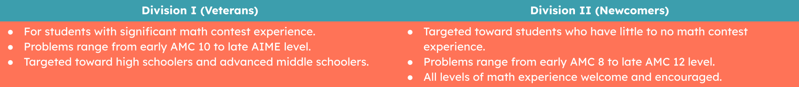

JMPSC is a student-run, non-profit math contest that's run every year, targeted towards all middle and high school students who are passionate about mathematics. We aim to provide a set of high-quality math problems to test your math skills and problem-solving abilities. The competition is completely free to thanks to our amazing sponsors and will be hosted this year around August. We hope you will join us! Learn more about the competition below.

Competition Information
Our competition features 2 divisions, detailed below:

There are two rounds that are formatted the same way in each division. In Round 1,
contestants have 45 minutes to complete 20 problems. The top half of scorers in
Round 1 will advance onto Round 2, in which contestants have 60 minutes to solve
18 problems. Each correct answer in Round 1 is worth 3 points, and each correct
answer in Round 2 is worth 7 points. There is no penalty for incorrect or
unanswered problems.
Sponsors
TBD...
Contact
Contact details...